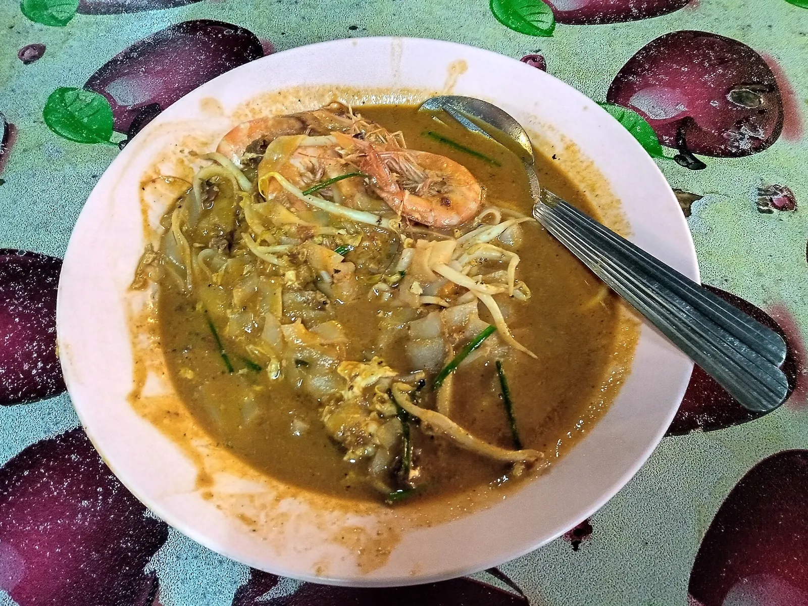
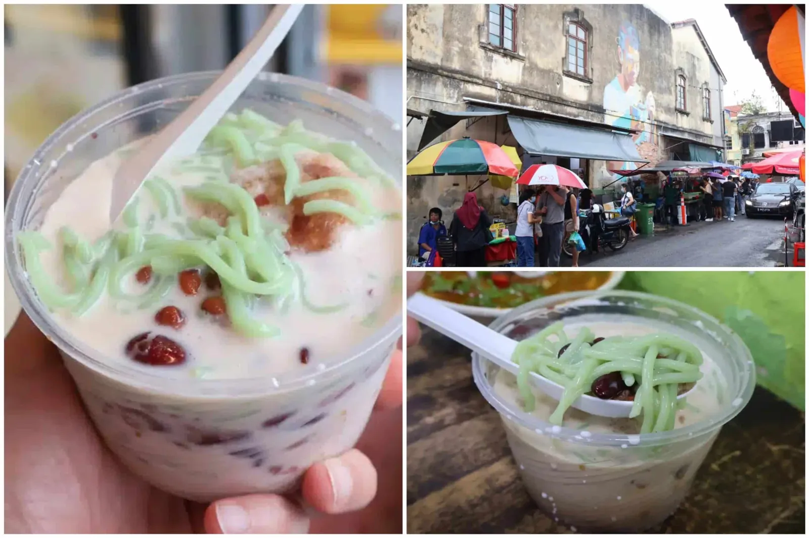

Saturday
Heritage walk · Hawker trail · Michelin dinner · Cocktail crawl
Saturday
Day 1 · The Heritage CoreRM25 adult Sells out — book ahead


The Saturday-Night Dinner
George Town's only two 1-Michelin-star restaurants — both retained in the 2026 Guide [30]
- 18-seat tasting menu, RM568++
- Contemporary — ~85% local produce, French technique
- Signatures: Cognac & Hay Aged Duck; all-cabbage opener (charred/aged/fermented)
- Chef Su Kim Hock (chef-patron)
- Thu–Sun · The Warehouse @ Hin Bus Depot (Grab from UNESCO core)
- Strict dress code; deposit required at booking

- À la carte Peranakan (Nyonya), RM8–RM118 per dish
- Curry Kapitan RM48 · Pie Tee · 8-spice Gulai Tumis with saffron
- Wed–Sun · 1 Bishop Street, inside the UNESCO core
- Family-run; no dress code; walk straight in as a solo, duo, or trio
Sunday
Day 2 · Penang Hill & the summitPenang Hill is a UNESCO Biosphere Reserve (designated 2021, 12,481 ha). [42] Buy the express ticket (RM80 vs RM40 regular) on weekends — regular queue can exceed 90 minutes. [40] Note: the much-anticipated Penang Hill Cable Car was 28% complete in April 2026, targeting December 2026 — not open for a June trip. [47]

The Habitat · summit, Penang Hill · 09:00–19:00 daily · RM60 · [41] | ⚠ Canopy Walkway at Penang National Park closed indefinitely [45]
Sunday dinner:
Pick from the Bib Gourmand list — Tek Sen, Communal Table by Gēn,
Sister Yao's Char Koay Kak, or 2025 new entrant
Laksalicious.
[21]
[36]
Getting around: free Rapid Penang CAT shuttle — 19 stops around the UNESCO core, every 10–15 min, 06:00–23:45. [61] · Grab island-wide rarely exceeds RM40 even at night. [51]
Stay inside the UNESCO core — everything above is walkable. [53] · 81 sources · expedition depth · 10 min read · Full research →